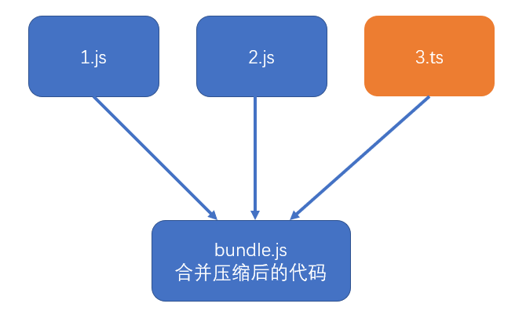
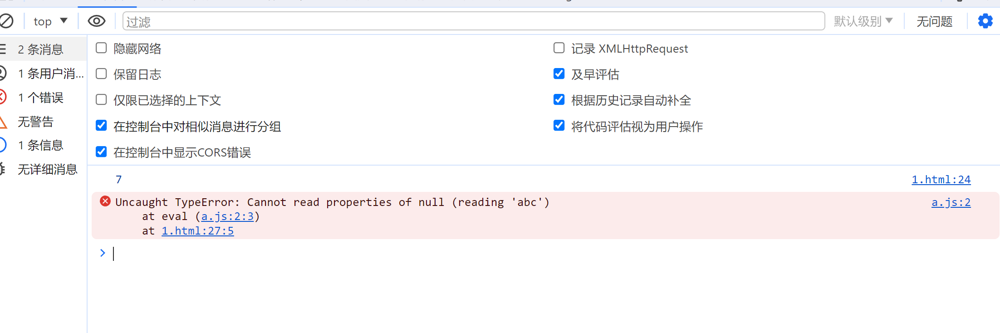
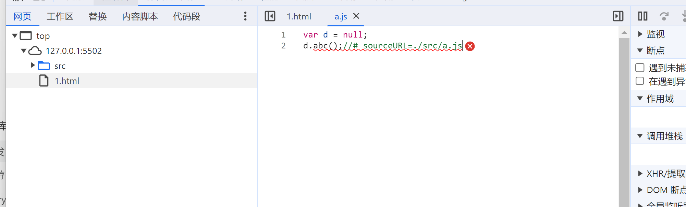
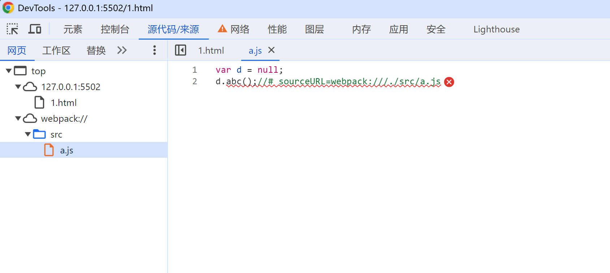

介绍
前端发展到现阶段，很多时候都不会直接运行源代码，可能需要对源代码进行合并、压缩、转换等操作，真正运行的是转换后的代码
这就给调试带来了困难，因为当运行发生错误的时候，我们更加希望能看到源代码中的错误，而不是转换后代码的错误
source map 实际上是一个配置，配置中不仅记录了所有源码内容，还记录了和转换后的代码的对应关系

如果在加载 bundle.js 的时候发现里面还有 source map 那浏览器还会去加载 bundle.map 文件

最佳实践：
- source map 应在开发环境中使用，作为一种调试手段
- source map 不应该在生产环境中使用，source map 的文件一般较大，不仅会导致额外的网络传输，还容易暴露原始代码。即便要在生产环境中使用 source map，用于调试真实的代码运行问题，也要做出一些处理规避网络传输和代码暴露的问题。
eval 方式
如果一个代码使用 eval 函数，在调试的时候会单独写成一个 VM（虚拟机引擎编号），方便调试
<script>
let a =2; let h=5; // debugger; console.log(a+h); eval('let c=5;c.abd();')
</script>
后面还可以加上注释（给浏览器看的）
eval("var d = null;\nd.abc();//# sourceURL=./src/a.js");


如果我们在 sourceURL 上加上一个前缀，那么在浏览器源码中就会生成这么一个 webpack 文件，我们在实际代码里肯定是没有的，但是可以在窗口调试中看到。
可以让浏览器把代码归到这个目录下
eval("var d = null;\nd.abc();//# sourceURL=webpack:///./src/a.js");
